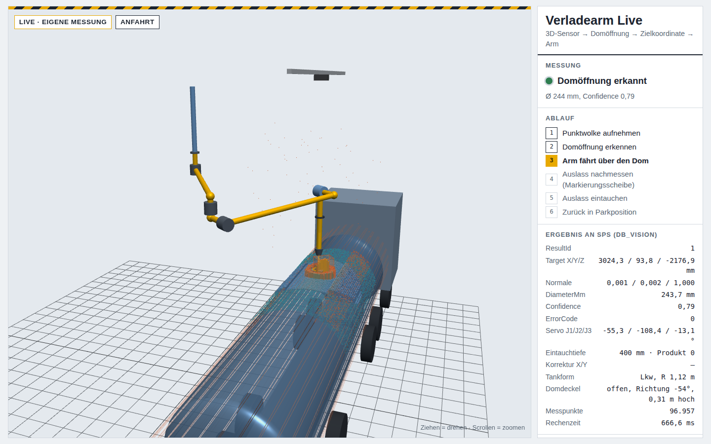

Kamerageführte Obenbefüllung von Tank- und Kesselwagen – technische Zusammenfassung
HETA Verfahrenstechnik GmbH, LichStand: 07.10.2026Status: Prototyp in Aufbau
Kurzfassung. Ein bestehender Verladearm mit drei angetriebenen Gelenken wird automatisiert.
Eine 3D-Kamera über der Verladestelle erkennt Domöffnung, Domdeckel und Aufbauten des Fahrzeugs.
Ein Industrie-PC berechnet daraus eine kollisionsfreie Bahn und übergibt sie als Gelenkwinkel an
die SPS, die den Arm mit Servoantrieben fährt, vor dem Eintauchen nachmisst und nach der Beladung
wieder in die Parkstellung zurückbringt. Ablauf, Verriegelungen und Sicherheit liegen in der SPS;
der PC macht nur geprüfte Vorschläge.
1. Ziel und Ausgangslage
Heute: Der Arm wird von Hand über den Dom geführt; der Bediener steht dabei auf der
Bühne bzw. dem Fahrzeug, nahe der offenen Öffnung (Dämpfe, Absturzgefahr).
Ziel: Nach Produktwahl und Start am Bedienpanel findet der Arm den Dom selbst, taucht
produktabhängig tief ein und fährt nach „Beladung beendet“ selbsttätig zurück.
Anforderungen (Auszug): Positioniergenauigkeit des Auslasses zur Domöffnung ±20 mm;
wechselnde Fahrzeuge (Lkw, Kesselwagen) und Dombauarten; Betrieb im Freien; keine Kollision
mit Fahrzeug, Deckel, Armaturen oder Anlagenteilen.
2. Gesamtkonzept
Bild 1: Aufgabenteilung. Der PC plant, die SPS prüft und fährt, die Sicherheitstechnik wirkt unabhängig vom PC.
Ablauf einer Verladung
Arm in Parkstellung, Fahrzeug fährt vor (Lichtschranke), Klapptreppe aus, Fahrer öffnet den Dom, Treppe zurück.
Bediener wählt das Produkt (bestimmt die Eintauchtiefe), bestätigt „Fahrzeug bereit“ und startet.
Job 1 – Messen und planen: Kamera nimmt die Szene auf; der PC erkennt die Öffnung und alle
Hindernisse und liefert eine kollisionsfreie Bahn bis über den Dom und für das Eintauchen.
Job 2 – Nachmessen: Über dem Dom misst die Kamera den Referenzflansch am Auslass und die
Öffnung im selben Bild; der PC korrigiert die Restbahn (Getriebespiel, Durchbiegung).
Senkrechtes Eintauchen, Beladung (Absperrklappe und Überfüllsicherung in der SPS bzw. unabhängig).
Job 3 – Rückfahrt: nach „Beladung beendet“ neuer Scan, senkrecht heraus, kurze Abtropfpause
über der Öffnung (geplant), kollisionsfrei in die Parkstellung.
3. Mechanik und Kinematik
Der Arm (Prototyp HETA) wird von oben über eine Fallleitung versorgt, deren Achse zugleich die
Drehachse J1 ist. Höhenbezug ist die Oberkante des Schnittstellenflansches am Eintritt J1
(ca. 5,9 m über Fahrbahn).
Gelenk
Element
Maß (Prototyp)
J1
Drehgelenk am Haltepunkt, senkrechte Achse (Fallleitung)
Bereich ±120°
innerer Ausleger, fest 3° fallend
2,40 m
90°-Winkel nach unten (Fallrohr)
0,43 m
J2
Drehgelenk um die Achse des Fallrohrs
Bereich ±140°
90°-Winkel zur Seite
0,56 m
J3
Heben/Senken des äußeren Auslegers (Querachse)
±45°
äußerer Ausleger / Winkel zurück
2,70 m / 0,45 m
J4
frei drehendes Gelenk ohne Antrieb – der Auslass hängt durch Schwerkraft senkrecht
Auslass 1,41 m
Daraus ergeben sich eine Reichweite von ca. 5,1 m um J1 und ein Arbeitsraum für Domoberkanten
von ca. 3,2–5,0 m über Fahrbahn. Weil die Kinematik keine Standardform ist (Gefälle, Versätze,
pendelnder Auslass), sind Vorwärts- und Rückwärtsrechnung eigens umgesetzt; alle Maße stehen in
einer Anlagendatei je Arm.
Planetengetriebe P5KG31 i = 4 + Ritzel z 48 / Zahnkranz z 127 (Modul 2) → i ≈ 10,6
Stirnradgetriebe RF47 i = 42,9 + Schwenkantrieb (Schnecke) i = 34
Geber
Multiturn-Absolutwertgeber am Motor (keine Referenzfahrt nach dem Einschalten) – bei SEW angefragt
Bremse
Haltebremse (Zahnradstufe nicht selbsthemmend, Windlast)
vorhanden (Selbsthemmung der Schnecke nicht zugesichert)
Dynamik
max. ca. 6 °/s am Gelenk, weiche Rampen 1,5–4 s; Eintauchen und Herausfahren mit reduzierter Geschwindigkeit
Umrichter
SEW mit Geberauswertung, Feldbus zur SPS, STO und Bremsenansteuerung – Typ in Klärung
Synchronfahrt: Die SPS skaliert je Stützpunkt die Geschwindigkeiten der drei Achsen so,
dass alle mit demselben Bewegungsprofil gleichzeitig ankommen. Damit fährt der Arm genau die vom
PC geprüfte Verbindung zwischen zwei Stützpunkten. Das Zahnspiel am Zahnkranz misst der Motorgeber
nicht; es wird durch das Nachmessen vor dem Eintauchen ausgeglichen.
5. Sensorik
SICK Visionary-T Mini CX (V3S105-1AAAAAD)
Prinzip
3D Time-of-Flight, 512 × 424 Bildpunkte
Blickfeld
70° × 60°
Genauigkeit
±3 mm @ 2 m, ±7 mm @ 4 m (90 % Remission)
Umgebung
IP65/67/69, −10 … +50 °C, Frontscheibe Glas
Fremdlicht
bis 50 klx → Sonnenschutzdach
Anschluss
Gigabit-Ethernet, 24 V
Warum 3D-ToF: liefert direkt Abstände je Bildpunkt (Höhe von Dom, Deckel, Armaturen),
unabhängig von Farbe und Textur der Fahrzeuge, ohne eigene Beleuchtung; robust für den
Außeneinsatz. Glas statt Kunststoff wegen Lösemitteldämpfen und Reinigung.
Montage: senkrecht nach unten, ca. 7,5 m über Fahrbahn und oberhalb des höchsten
Armpunkts, etwa mittig über dem Domarbeitsraum, leicht seitlich versetzt, damit der Ausleger den
Referenzflansch beim Nachmessen nicht verdeckt.
Referenz am Auslass: vorhandener Flansch Ø 220 mm am Auslassrohr, von oben sichtbar.
6. Steuerung und Schnittstelle
SPS: Siemens S7-1500 (F-CPU oder Sicherheitsrelais je nach Risikobeurteilung). Eine
Lösung mit Beckhoff-IPC und TwinCAT (IPC und SPS in einem Gerät) wird verglichen.
Kopplung PC–SPS: OPC UA, ein Schnittstellen-Datenbaustein (DB_Vision). Handshake je
Auftrag, Lebenszeichen beider Seiten im 50-ms-Takt; Ausfall > 1 s → Stopp.
Übergabe: je Auftrag bis zu 16 Stützpunkte als Gelenkwinkel (Servo-Grad) plus
kartesisches Ziel, Richtung der Öffnung, Durchmesser, Konfidenz und Fehlercode.
Prüfung in der SPS: Achsgrenzen und Plausibilität jeder Vorgabe; geplant zusätzlich
eine unabhängige Gegenprüfung mit der Vorwärtskinematik (feste Sperrzonen der Station,
Absenkkorridor um den Dom).
Job
PC
Stützpunkte
1
Dom, Deckel, Aufbauten und Fremdkörper messen; Bahn ab Istlage planen
Anfahrt (synchron, ggf. mit Umweg), senkrechtes Absenken, Eintauchen
2
Auslass über dem Dom nachmessen, Modellabweichung ausgleichen
korrigierter Anfahrpunkt, Eintauchen
3
erneut scannen, Rückfahrt ab Istlage planen
senkrecht heraus, in die Parkstellung
Warum Gelenkwinkel statt kartesischer Koordinaten: Zu einer Auslassposition gibt es meist
mehrere Armstellungen. Der PC prüft genau eine davon auf Kollisionen – mit Gelenkwinkeln fährt die
SPS eindeutig diese. Die Hindernisse stammen aus der Punktwolke und liegen nur auf dem PC vor.
7. Software
Eigenentwicklung in Python (NumPy/SciPy), lauffähig auf einem Linux-Industrie-PC als Systemdienst.
Kamera-Anbindung über die offizielle SICK-Bibliothek, SPS-Anbindung über OPC UA.
7.1 Erkennung
Aufnahme: mehrere Bilder, pixelweiser Median gegen Rauschen; Umrechnung in Armkoordinaten
über die Kalibrierung.
Fahrzeug: Fahrbahn und Tankoberfläche robust geschätzt (RANSAC); Tankform (Zylinder
bzw. ebenes Dach) und Lage.
Domöffnung: tiefe Bereiche im Domkragen, innerster Rand je Winkelsektor, robuste
Kreisanpassung → Mitte, Durchmesser (0,18–0,70 m), Richtung und Konfidenz. Erkennt auch die
kleinere Füllöffnung in einem Domdeckel mit Armaturen.
Hindernisse: offener Deckel (gedrehter Quader), Domkragen (Zylinder), Aufbauten am Dom
als Höhenkarte, Fremdkörper im gesamten Blickfeld (Leiter, Fass, Geländer) – bei jeder Fahrt
neu, auch vor der Rückfahrt.
7.2 Bahnplanung und Kollisionsprüfung
Rückwärtsrechnung (Newton-Verfahren) für Vorpunkt über dem Dom, Anfahrpunkt und Eintauchpunkt;
mehrere Lösungen werden verglichen.
Bahn: synchrone Gelenkbewegung zum Vorpunkt, senkrechtes Absenken, senkrechtes Eintauchen.
Ist der direkte Weg blockiert, sucht ein RRT-Connect-Planer einen Umweg im Gelenkraum, der
anschließend geglättet und auf höchstens 16 Stützpunkte reduziert wird.
Kollisionsprüfung: Rohrführung als Strecken mit Mindestabstand gegen alle Hindernisse
(Fahrzeug, Deckel, Aufbauten, Fremdkörper, Anlagenteile, Fallleitung) und gegen den eigenen
Arm (äußerer gegen inneren Ausleger). Geprüft werden auch die Zwischenstellungen zwischen den
Stützpunkten.
Genauigkeit: In der Simulation mit Getriebespiel liegt der Auslass nach dem Nachmessen
unter 5 mm neben der Domachse (Anforderung ±20 mm).
7.3 Kalibrierung
Hand-Auge-Kalibrierung: Der Arm fährt im Handbetrieb 10–16 Stellungen im Arbeitsraum an; je
Stellung liefert die SPS die Istwinkel, die Kamera misst den Referenzflansch. Aus den Punktpaaren
folgt die Lage der Kamera zur Armbasis (Ausgleichsrechnung nach Kabsch/SVD), mit Restfehler je
Stellung und Protokoll. Ziel: mittlerer Restfehler unter 5 mm.

Bild 2: Live-Ansicht (Browser) mit simuliertem Tankwagen: Punktwolke, erkannte Domöffnung
(Ø 244 mm), offener Deckel, geplante Armbewegung und die an die SPS übergebenen Werte.
7.4 Werkzeuge für Entwicklung und Inbetriebnahme
Werkzeug
Zweck
Simulation
Simulierte Kamera (Lkw, Kesselwagen, verschiedene Dombauarten, Fremdkörper, Getriebespiel) und SPS-Simulator mit Bedienablauf und Verriegelungen; kompletter Ablauf ohne Hardware.
Konfigurator (Browser)
Anlagendatei je Arm bearbeiten: Maße, Achsen, Hindernisse (auch grafisch), Produkte, Arbeitsraum, Kamera; laufende Plausibilitätsprüfung.
Inbetriebnahmeprüfung
Reichweite, Kollisionen und Fahrzeiten über den gesamten Arbeitsraum als Bericht.
Live-Ansicht
3D-Darstellung im Browser, liest die SPS-Schnittstelle nur mit (z. B. Tablet an der Station).
Aufzeichnung
Jede Verladung mit Punktwolke und Ergebnis; Auswertung als Tabelle.
Automatische Tests
rund 130 Tests (Erkennung, Kinematik, Bahnplanung, Schnittstelle, Abläufe).
8. Sicherheitskonzept (Stand)
Der PC kann den Arm nicht direkt bewegen. Er liefert Vorschläge; die SPS prüft und fährt.
Fällt der PC aus, stoppt die SPS (Lebenszeichen), der Arm lässt sich im Servicebetrieb zurückfahren.
Sicherheitsfunktionen: Not-Halt, STO der Umrichter, Haltebremsen, Rückmeldung
„Klapptreppe eingefahren“, Lichtschranke Fahrzeug, Achsgrenzen; Momenten- und
Schleppfehlerüberwachung der Antriebe begrenzt die Folgen eines Anstoßes.
Personenschutz im Schwenkbereich über zugelassene Sicherheitssensorik (z. B. Schutzfeld),
nicht über die Kamera; Umfang nach Risikobeurteilung.
Überfüllsicherung und Erdung bleiben eigenständige, zugelassene Einrichtungen.
Handbetrieb nur für Service (Achsen tippen; Bremse J3 wird nie gelüftet); Bediener
haben im Normalbetrieb nur Automatik, Produktwahl und Parameter.
Offen: Risikobeurteilung (EN ISO 12100, Sicherheitsfunktionen nach EN ISO 13849),
Ex-Zone an der Verladestelle und deren Auswirkung auf Kamera, Motoren und Geber.
9. Stand und nächste Schritte
Bereich
Stand
Software
Erkennung, Bahnplanung, Schnittstelle, Kalibrierung und Werkzeuge vorhanden; in der Simulation mit wechselnden Fahrzeugen, Dombauarten und Fremdkörpern erprobt.
Hardware
Kamera, Industrie-PC und SPS vorhanden; J3-Antrieb im Handbetrieb erprobt; Geber, Bremsen und Umrichter angefragt; Schaltschrank und SPS-Programm in Angebotsphase.
Nächste Schritte
Kameratest an einem stehenden Tankwagen (reale Dome, Deckel, Sonnenlicht) · Antriebe und Schaltschrank · Inbetriebnahme Prototyp mit Kalibrierung · Probeverladungen · Risikobeurteilung. Ziel: einsatzbereit im April 2027.
10. Mögliche Schwerpunkte einer Bachelorarbeit
Vorschläge zur Abstimmung – je nach Studienrichtung und Interesse:
Validierung der Domerkennung an realen Aufnahmen: Katalog der Dombauarten, Erkennungsrate,
Einfluss von Sonnenlicht, Nässe und Verschmutzung.
Genauigkeitsnachweis der Positionierung (Anforderung ±20 mm): Kalibrierung,
Getriebespiel, Durchbiegung, Nachmessen – Messkonzept und Auswertung am Prototyp.
Sicherheitskonzept und Risikobeurteilung für die automatisierte Verladestelle,
einschließlich Ex-Schutz-Bewertung und Einbindung in die Werksvorgaben.
Bahnplanung und Taktzeit: Vergleich von Planungsverfahren, Fahrzeitoptimierung,
Überschleifen von Stützpunkten.
Erweiterungen: Füllstandsmessung mit Nachführen des Auslasses (Unterspiegelbefüllung),
automatische Prüfung „Dom wieder geschlossen“ vor der Ausfahrt.
Vertraulich – Informationen der HETA Verfahrenstechnik GmbH, ausschließlich zur Vorbereitung der
Abschlussarbeit. Technischer Stand eines Prototyps; Angaben können sich ändern.